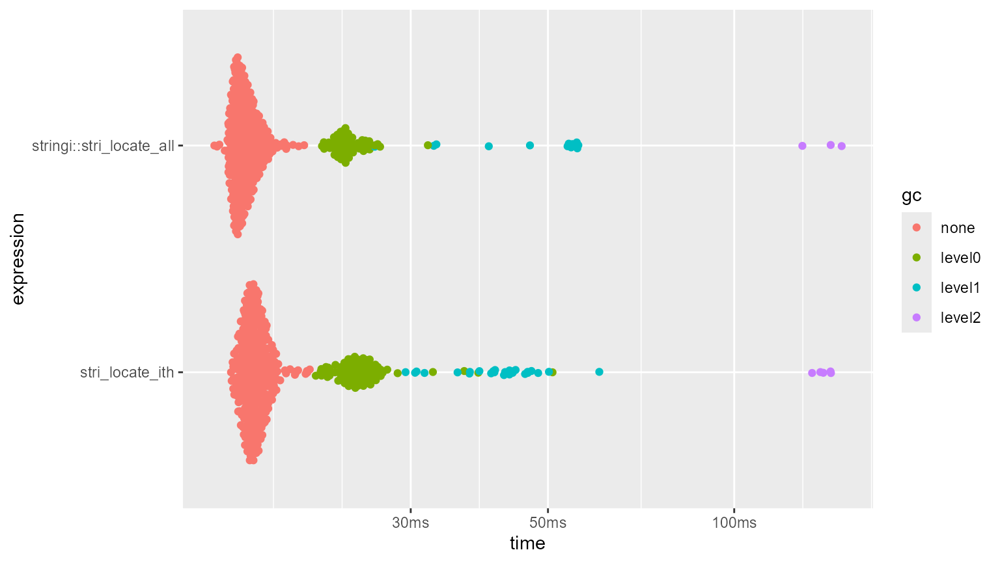
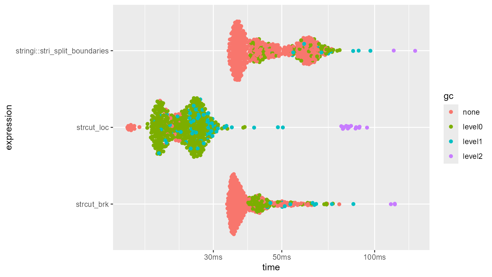
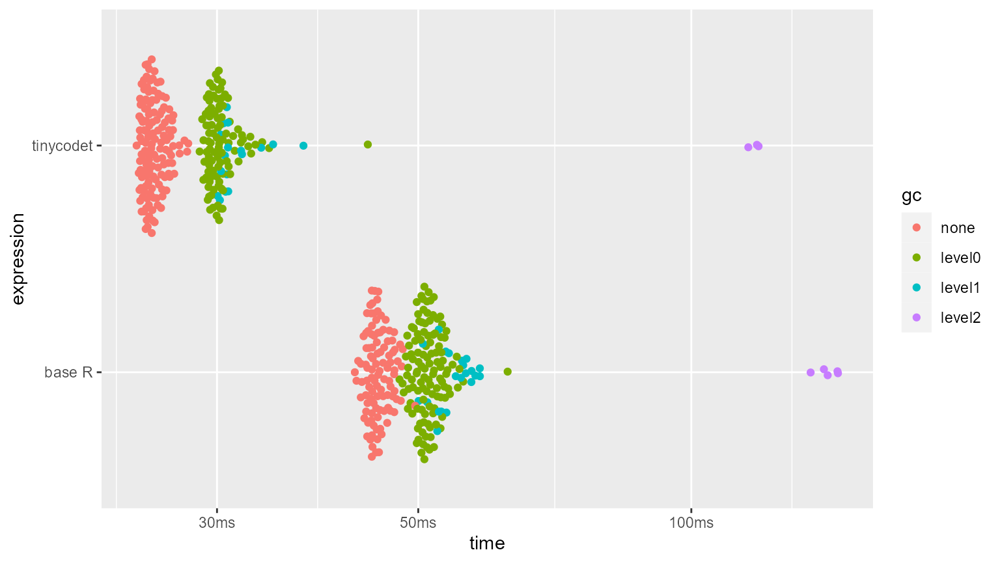

library(tinycodet)
#> Run `?tinycodet::tinycodet` to open the introduction help page of 'tinycodet'.
loadNamespace("bench")
#> <environment: namespace:bench>
loadNamespace("ggplot2")
#> <environment: namespace:ggplot2>
Introduction
Although the functions in this R package were written mostly in ‘R’
(and a little bit in ‘C’ and ‘C++’), the functions - especially the
string related ones - have been well optimized. The string related
functions, for example, are about in the same order of magnitude in
terms of speed as the stringi functions they call.
Here some speed comparisons are given, using the ‘bench’ package.
stri_locate_ith
n <- 1e5
x <- rep(paste0(1:50, collapse = ""), n)
p <- "\\d"
i <- sample(c(-50:-1, 1:50), replace=TRUE, size = n)
locate_stringi <- function(...) {
stringi::stri_locate_all(...)
stringi::stri_count(...)
}
bm.stri_locate_ith <- bench::mark(
"stri_locate_ith" = { stri_locate_ith_regex(x, p, i) },
"stringi::(stri_locate_all + stri_count)" = { locate_stringi(str=x, regex = p) },
min_iterations = 500,
check = FALSE,
filter_gc = FALSE
)
ggplot2::autoplot(bm.stri_locate_ith)#> Loading required namespace: tidyr
strcut
n <- 1e5
x <- rep("hello", n)
i <- sample(1:3, n, replace = TRUE)
loc <- stri_locate_ith(x, i=i, regex="a|e|i|o|u")
bm.strcut <- bench::mark(
"strcut_loc" = { strcut_loc(x, loc) },
"strcut_brk" = { strcut_brk(x, type = "", tolist = TRUE) },
"stringi::stri_split_boundaries" = {
stringi::stri_split_boundaries(x, type="character")
},
min_iterations = 500,
check = FALSE,
filter_gc = FALSE
)
ggplot2::autoplot(bm.strcut)
Row/columns-wise re-ordering
mat <- matrix(sample(1:1e6), ncol = 1e3)
bm.roworder <- bench::mark(
tinycodet = mat %row~% mat,
"base R" = do.call(rbind, apply(mat, 1, sort, simplify = FALSE)),
min_iterations = 250
)
ggplot2::autoplot(bm.roworder)
bm.colorder <- bench::mark(
tinycodet = mat %col~% mat,
"base R" = do.call(cbind, apply(mat, 2, sort, simplify = FALSE)),
min_iterations = 250
)
ggplot2::autoplot(bm.colorder)
form() memory leak
library(pryr)
loopfun <- function() {
for (i in 1:8) {
cat(i, ": ", sep = "")
print(mem_used())
fun_name <- paste0("fun_", i)
obj_name <- paste0("obj_", i)
assign(
fun_name,
f2,
envir = parent.frame(n = 1)
)
assign(
obj_name,
eval(parse(text = paste0(fun_name, "()"))),
envir = parent.frame(n = 1)
)
rm(list = fun_name, envir = parent.frame(n = 1))
}
}When creating a formula with the tilde (~ ) operator,
and storing a formula in a variable to be used later, the environment is
captured by the formula. Therefore, any object in the captured
environment might not be freed from the memory, potentially creating
some memory leak.
The form() function by default has no environment
attached to it, thus has no memory leak.
First a demonstration of the absence of memory leak with the
form() function (code inspired by https://r-lib.github.io/fastmap/#memory-leak-examples):
f2 <- function() {
x <- rnorm(1e6)
out <- form(a ~ b)
return(out)
}
gc()
#> used (Mb) gc trigger (Mb) max used (Mb)
#> Ncells 1399040 74.8 2861651 152.9 2861651 152.9
#> Vcells 6440930 49.2 10146329 77.5 7918208 60.5
start_mem <- mem_used()
start_time <- as.numeric(Sys.time())
loopfun()
#> 1: 130 MB
#> 2: 130 MB
#> 3: 130 MB
#> 4: 130 MB
#> 5: 130 MB
#> 6: 130 MB
#> 7: 130 MB
#> 8: 130 MB
end_time <- as.numeric(Sys.time())
gc()
#> used (Mb) gc trigger (Mb) max used (Mb)
#> Ncells 1400058 74.8 2861651 152.9 2861651 152.9
#> Vcells 6443710 49.2 12255594 93.6 7918208 60.5
end_mem <- mem_used()
cat("Elapsed time:", round(end_time - start_time, 1), "seconds\n")
#> Elapsed time: 0.8 seconds
cat("Memory leaked: \n"); print(end_mem - start_mem)
#> Memory leaked:
#> 77.8 kB
rm(list = "f2")Second, a demonstration of using a regular formula (code inspired by https://r-lib.github.io/fastmap/#memory-leak-examples):
f2 <- function() {
x <- rnorm(1e6)
out <- a ~ b
return(out)
}
gc()
#> used (Mb) gc trigger (Mb) max used (Mb)
#> Ncells 1400116 74.8 2861651 152.9 2861651 152.9
#> Vcells 6444789 49.2 12255594 93.6 7918208 60.5
start_mem <- mem_used()
start_time <- as.numeric(Sys.time())
loopfun()
#> 1: 130 MB
#> 2: 138 MB
#> 3: 146 MB
#> 4: 154 MB
#> 5: 162 MB
#> 6: 170 MB
#> 7: 178 MB
#> 8: 186 MB
end_time <- as.numeric(Sys.time())
gc()
#> used (Mb) gc trigger (Mb) max used (Mb)
#> Ncells 1400190 74.8 2861651 152.9 2861651 152.9
#> Vcells 14444906 110.3 25842636 197.2 14465977 110.4
end_mem <- mem_used()
cat("Elapsed time:", round(end_time - start_time, 1), "seconds\n")
#> Elapsed time: 0.8 seconds
cat("Memory leaked: \n"); print(end_mem - start_mem)
#> Memory leaked:
#> 64 MB
rm(list = "f2")
Thus, clearly using a regular formula (the last chunk) has memory
leakage, whereas the form() function does not have
leakage.